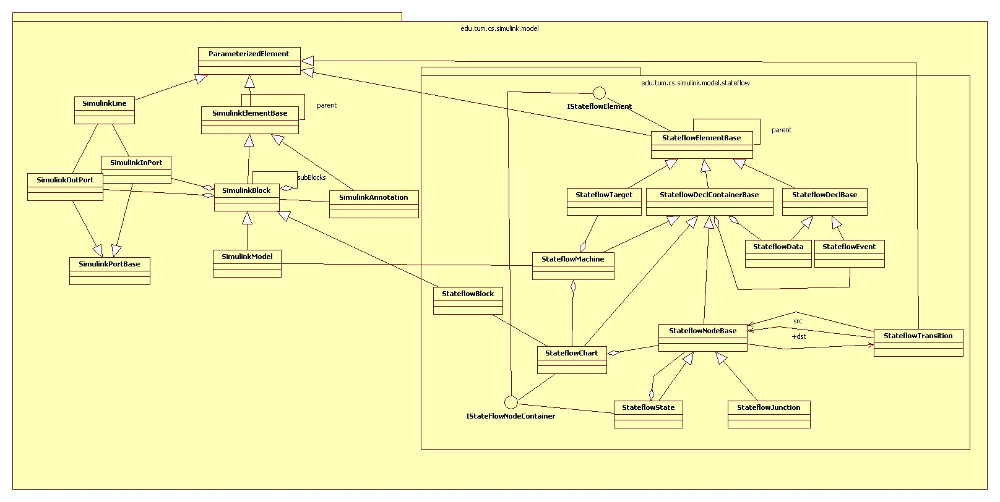

This package contains the implementation of the Simulink model.
Model Overview

Annotations
Simulink has a two-level mechanism for the definition of parameters at annotations:
- A parameter can be specified directly for an annotation.
- Additionally the model maintains a list of default parameters for all
annotations.
These parameters can be accessed by
{@link org.conqat.lib.simulink.model.SimulinkModel#getAnnotationDefaultParameter(String)}.
Lines
Simulink has a two-level mechanism for the definition of parameters at lines:
- A parameter can be specified directly for a line.
- Additionally the model maintains a list of default parameters for all
lines.
These parameters can be accessed by
{@link org.conqat.lib.simulink.model.SimulinkModel#getLineDefaultParameter(String)}.
Blocks
Simulink has a three-level mechanism for the definition of parameters at blocks:
- A parameter can be specified directly for a block. These parameters can
be accessed by
{@link org.conqat.lib.simulink.model.SimulinkBlock#getParameter(String)}.
- For each block type a Simulink model maintains a list of default parameters.
These parameters can be accessed by
{@link org.conqat.lib.simulink.model.SimulinkModel#getTypeBlockDefaultParameter(String, String)}.
- Additionally the model maintains a list of default parameters for all
blocks.
These parameters can be accessed by
{@link org.conqat.lib.simulink.model.SimulinkModel#getBlockDefaultParameterNames(String)}.
When calling
{@link org.conqat.lib.simulink.model.SimulinkBlock#getParameter(String)}
this options are automatically resolved in the reversed order, i.e. it is first checked
if the block itself defines the parameter. If not, the default parameter
for the block type is looked up. If this is undefined, too, the block
default is returned (if there is one).